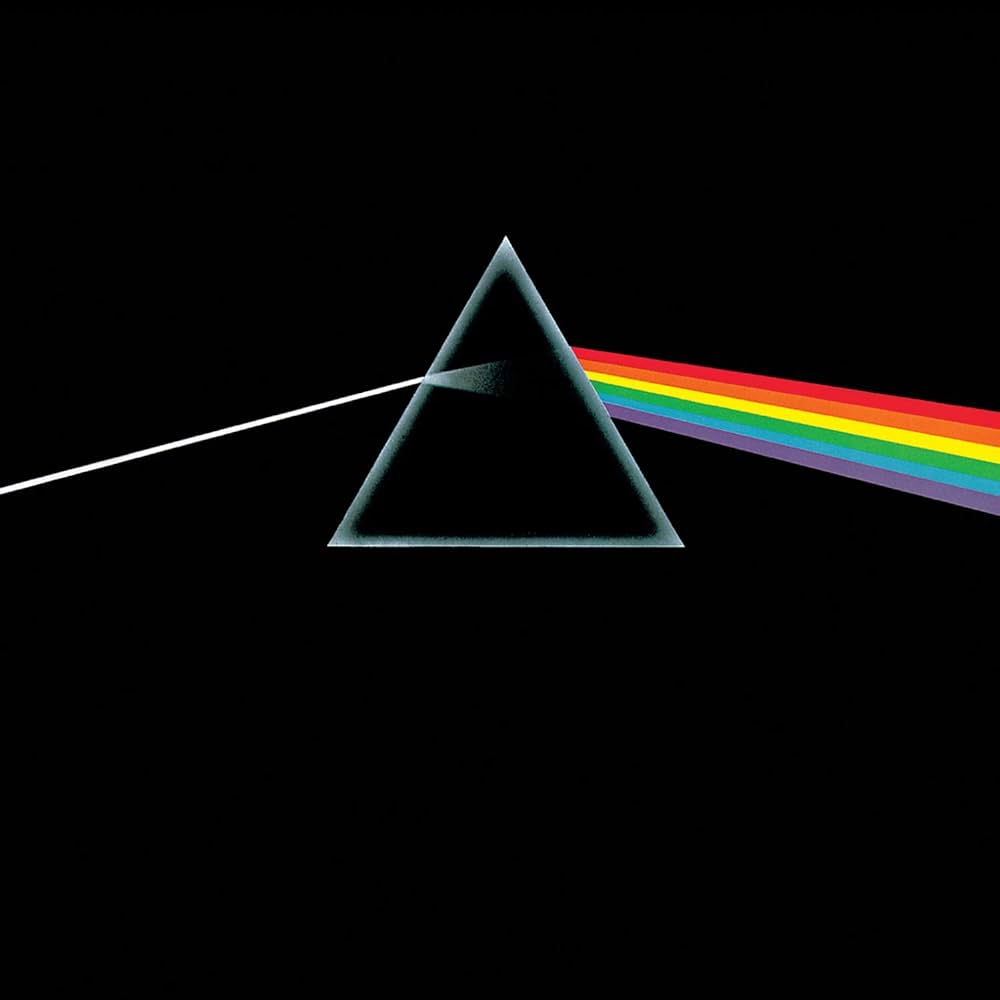
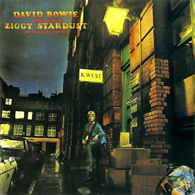
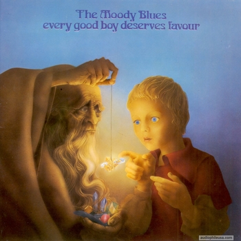
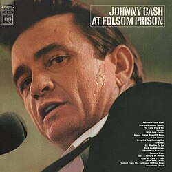
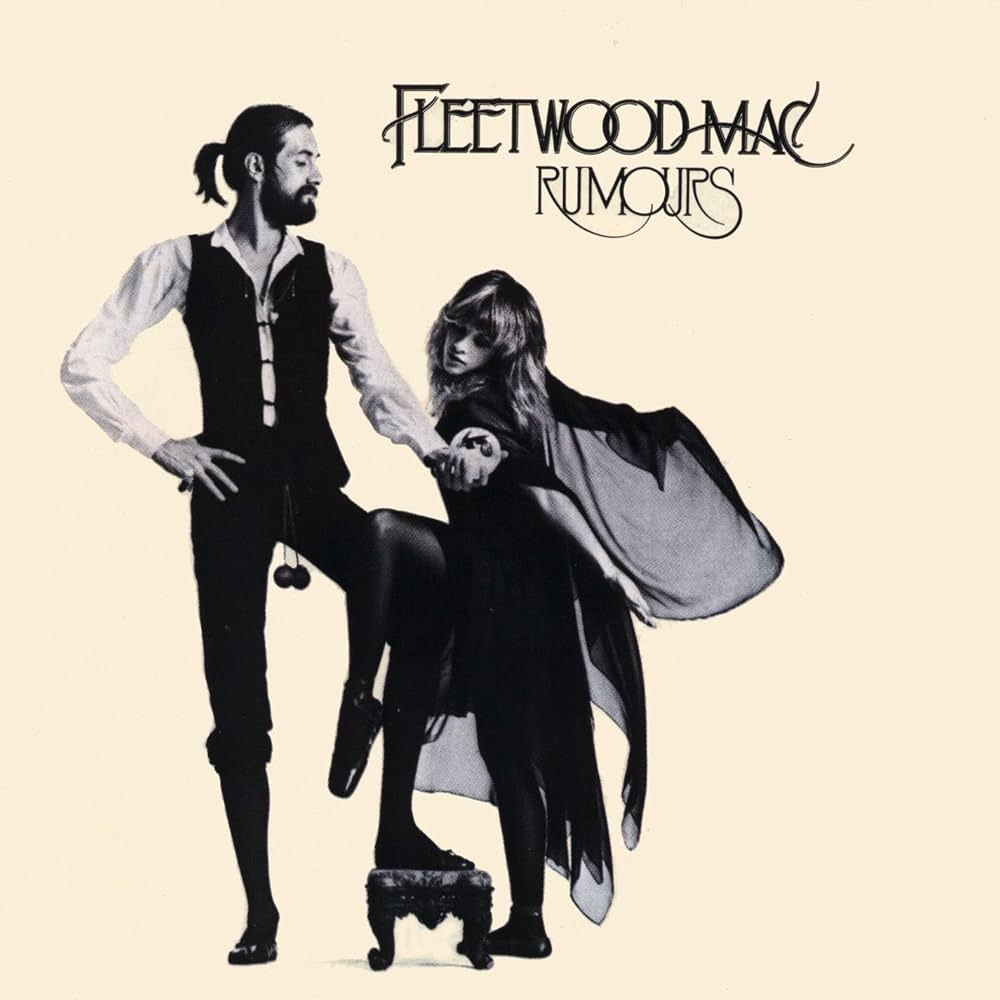
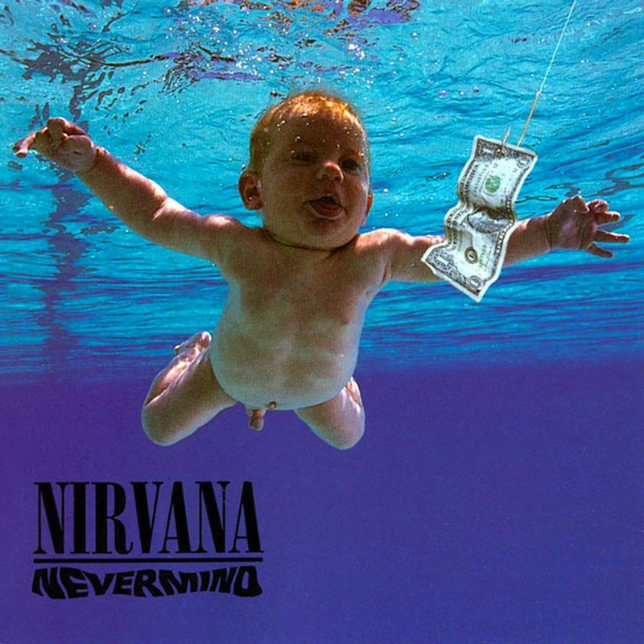
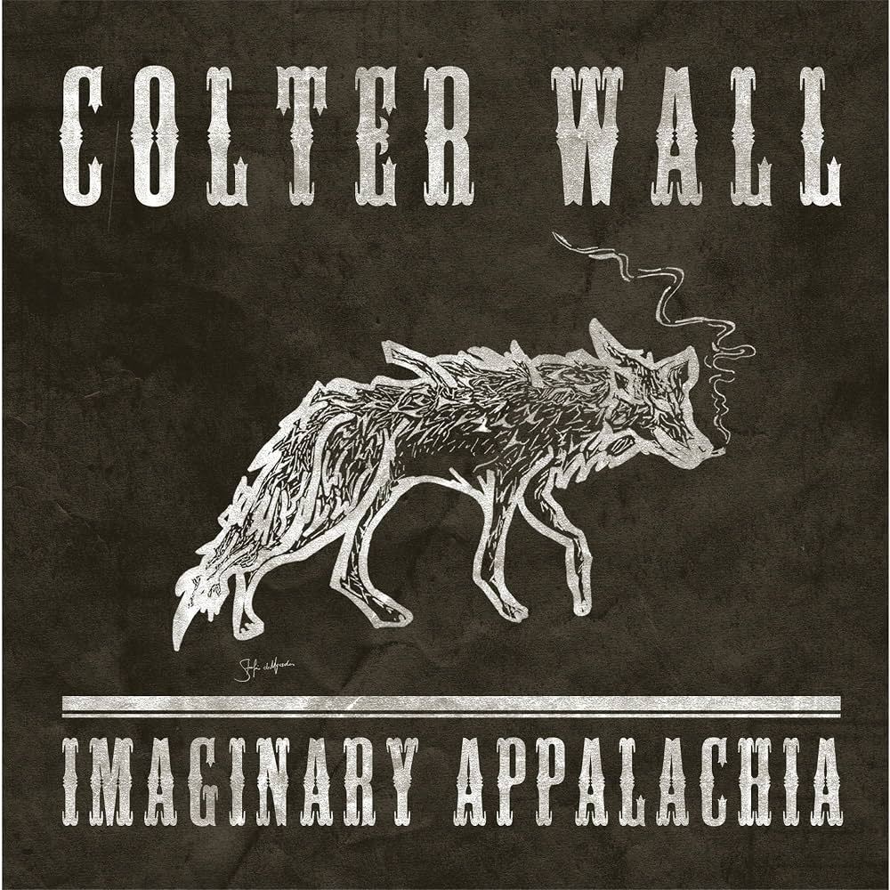

My top three albums
Dark Side of the Moon
- Pink Floyd

This album is just amazing, from start to finish. From my first listen, it just blew me away. It may seem like a basic or cliche pick, but it is just too incredible to ignore. Every second is a masterpiece.
Abbey Road
- The Beatles

I mean, you know The Beatles had to make the list. They're the best there ever was (fight me). And this album was the perfect farewell. So many incredible songs topped off with an absolutely beautiful medley.
The Rise and Fall of Ziggy Stardust and the Spiders from Mars
- David Bowie

Love him or hate him, you can't deny Bowie was a genius, as shown on this masterful album. I remember having very low expectations on my first listen, but wow, it just blew me away. Incredible guitar work mixed with great lyrics is a surefire formula for success.
Other honorable mentions
Every Good Boy Deserves Favour
- The Moody Blues

Only really known for their single, "Nights in White Satin", The Moody Blues are a very slept on band. They produced a load of masterful albums in the late 60's and this one is my favorite. Why it took so long for them to enter the rock n roll hall of fame I will never know.
At Folsom Prison
- Johnny Cash

I mean, it's Johnny Cash. An icon of country music. He can't be beat. And when I think of Johnny Cash, I think of this album, easily his best. Such raw emotion caught on tape can't be missed.
Rumours
- Fleetwood Mac

Still able to chart on the billboard top 100 every so often, this album is a powerhouse. There was so much going wrong when it was made, and all that negative energy was channeled into this: the pinnacle of what was Fleetwood Mac.
Nevermind
- Nirvana

I am 21, so naturally Nirvana had to be near the top. What teenager/young adult has not turned to them for solace from the unjustice of the world? Kurt Cobain captured those feelings in a way no other could.
Imaginary Appalachia
- Colter Wall

The most modern album on the list, Colter Wall really helped revitalize what I love about country: storytelling and simple, stripped-down ballads celebrating life far from civilization.